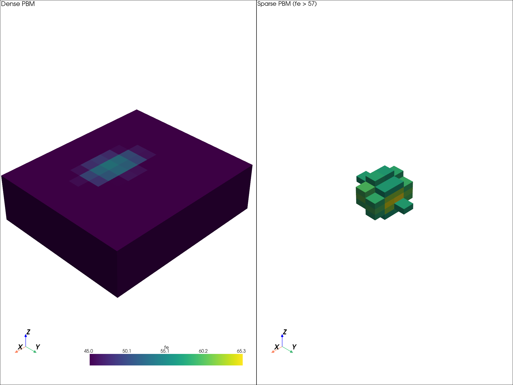

Note
Go to the end to download the full example code.
Dense and Sparse PBM from XYZ Parquet#
This example shows an axis-aligned workflow that starts dense and then creates a sparse model from filtered rows.
Workflow:
Create a source Parquet file with a synthetic
fecolumn.Create a dense PBM via
from_parquet().Filter the source rows to
fe > 57.Create a second PBM from that sparse input.
Compare dense and sparse models visually.
import tempfile
from pathlib import Path
import pandas as pd
import pyarrow as pa
import pyarrow.parquet as pq
import pyvista as pv
from parq_blockmodel import ParquetBlockModel
from parq_blockmodel.utils.demo_block_model import create_toy_blockmodel
Create a Centroid Parquet File#
Use the toy helper to write a parquet file containing x, y, z
centroid columns and a synthetic fe grade.
temp_dir = Path(tempfile.gettempdir()) / "sparse_parquet_to_pbm"
temp_dir.mkdir(parents=True, exist_ok=True)
source_parquet = temp_dir / "dense_source.parquet"
toy_df = create_toy_blockmodel(
shape=(14, 12, 8),
block_size=(10.0, 10.0, 5.0),
corner=(0.0, 0.0, 0.0),
grade_name="fe",
grade_min=45.0,
grade_max=70.0,
deposit_center=(70.0, 60.0, 20.0),
deposit_radii=(45.0, 35.0, 18.0),
noise_std=0.0,
)
# Build an xyz-indexed source parquet for the external-use-case scenario.
source_df = toy_df.reset_index(drop=False)
source_df = source_df.drop(columns=["i", "j", "k"], errors="ignore")
source_df = source_df.set_index(["x", "y", "z"]).sort_index()
source_df.to_parquet(source_parquet)
loaded_source_df = pd.read_parquet(source_parquet)
if loaded_source_df.index.names != ["x", "y", "z"]:
raise RuntimeError("Expected source parquet to load with MultiIndex ['x', 'y', 'z'].")
if any(col in loaded_source_df.columns for col in ["i", "j", "k"]):
raise RuntimeError("Source parquet must not contain i, j, k columns.")
loaded_source_df.head()
Create Dense PBM#
Promote the raw centroid parquet to the canonical .pbm format.
pbm_dense = ParquetBlockModel.from_parquet(source_parquet)
pbm_dense
ParquetBlockModel(name=dense_source, path=/tmp/sparse_parquet_to_pbm/dense_source.pbm)
Filter to High-Grade Rows (fe > 57)#
Filter the original block rows, then write a sparse parquet while preserving geometry metadata from the dense PBM so the sparse model keeps the same grid.
source_table = pq.read_table(pbm_dense.blockmodel_path)
source_df = pd.read_parquet(source_parquet)
filtered_df = source_df[source_df["fe"] > 57.0].copy()
filtered_df = filtered_df.reset_index().sort_values(["x", "y", "z"])
if filtered_df.empty:
raise RuntimeError("No rows matched fe > 57. Lower the threshold or adjust toy model parameters.")
filtered_df.head()
sparse_parquet = temp_dir / "sparse_fe_gt57.parquet"
sparse_table = pa.table({col: filtered_df[col].to_numpy() for col in filtered_df.columns})
sparse_table = sparse_table.replace_schema_metadata(source_table.schema.metadata)
pq.write_table(sparse_table, sparse_parquet)
print(f"Dense rows : {len(source_df):,}")
print(f"Sparse rows: {len(filtered_df):,}")
Dense rows : 1,344
Sparse rows: 34
Create Sparse PBM#
The sparse parquet is now promoted to a second PBM.
pbm_sparse = ParquetBlockModel.from_parquet(sparse_parquet)
print(f"Dense is sparse? {pbm_dense.is_sparse}")
print(f"Sparse is sparse? {pbm_sparse.is_sparse}")
print(f"Sparse fraction {pbm_sparse.sparsity:.2%}")
Dense is sparse? False
Sparse is sparse? True
Sparse fraction 97.47%
Compare the Two Models#
Visualize both models side-by-side with a shared color range.
dense_grid = pbm_dense.to_pyvista(grid_type="image", attributes=["fe"])
sparse_grid = pbm_sparse.to_pyvista(grid_type="unstructured", attributes=["fe"])
fe_min = float(source_df["fe"].min())
fe_max = float(source_df["fe"].max())
plotter = pv.Plotter(shape=(1, 2))
plotter.subplot(0, 0)
plotter.add_text("Dense PBM", font_size=11)
plotter.add_mesh(dense_grid, scalars="fe", clim=[fe_min, fe_max], show_edges=False)
plotter.show_axes()
plotter.subplot(0, 1)
plotter.add_text("Sparse PBM (fe > 57)", font_size=11)
plotter.add_mesh(sparse_grid, scalars="fe", clim=[fe_min, fe_max], show_edges=False)
plotter.show_axes()
plotter.link_views()
plotter.show()

Total running time of the script: (0 minutes 0.743 seconds)